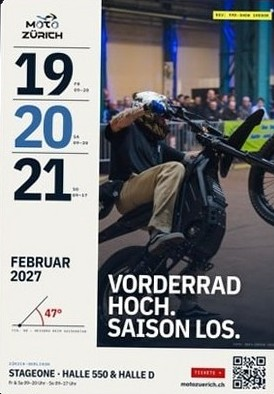
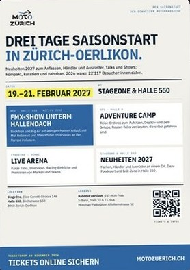
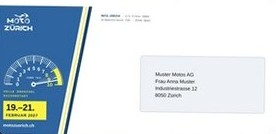

NewsVorderrad hoch. Saison los.
MOTO
An event photo, a news item, an announcement: you upload it once. The brand's design system turns it into the website post, posts for every social channel, the newsletter, poster, flyer and letter. A person approves, then everything goes out at once. Try it below.
One photo goes into the system. First social media, then the website, the newsletter, the letter by post and the poster on the wall. With sound.
Pick a piece of content or upload your own photo, change the title and click «Approve». Example: MOTO
MOTO
Vorderrad hoch. Saison los. #motozuerich
Vorderrad hoch. Saison los. MOTO
Save the Date: MOTO
Vorderrad hoch. Saison los. MOTO
MOTO
Dear Ms Muster,
Vorderrad hoch. Saison los.MOTO
The demo shows the principle right in your browser; nothing is published. In production the content goes out through our connections to the website, social media and newsletter; poster, flyer and letters come as print
Real work for MOTO



Photo, video or news go into the system by upload, from Google Drive or straight from the event.
Claude writes the copy per channel, the design system lays out every format. Typography and facts are checked.
A person sees every output at a glance and approves with one click.
Website, social media and newsletter go out at once. Poster, flyer and letters arrive as print
We set up your brand's design system and connect your channels. From then on, one photo is enough.